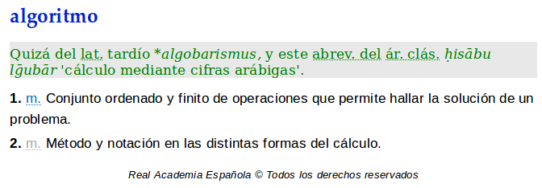

Algoritmos combinatorios
1 Introducción
1.1 Algoritmo según DRAE

1.2 Un ejemplo de algoritmo
1.3
- Nosotros estamos interesados en algoritmos para resolver problemas matemáticos.
- Problemas matemáticos:
- Encontrar las soluciones de la ecuación \(x^{2}-5x+4=0\).
- Encontrar la integral de \(e^{x}\) en el intervalo \([0,10]\).
- Encontrar los valores de \(x,y\) que sumen \(10\) de tal modo que su producto \(xy\) sea máximo.
- Dadas dos matrices cuadradas\(A,B\) determinar si existe una matriz invertible \(Q\) tal que \(A=Q^{-1}BQ\).
1.4 Combinatoria
- La combinatoria es la rama de las matemáticas en la que se estudian problemas donde los conjuntos que aparecen son finitos, y los métodos de solución utilizan de manera esencial tal finitud.
- La finitud implica que la computadora es una herramienta importante en problemas combinatorios.
1.5 La razón de estudiar algoritmos
… writing programs is not the target of computer science; solving problems efficiently and effectively with the limited resources found in a computer is the real goal.
– (Frieder, Frieder and Grossman, Computer Science Programming Basics with Ruby, p.87)
1.6 “Definición” de algoritmo
- Debe estar descrito en términos claros, de modo que pueda convertirse en un programa para una computadora.
- Dada una condición inicial válida, debe finalizar después de una cantidad finita de pasos.
- Debe finalizar con la respuesta correcta.
- Es conveniente
2 Primer problema: ordenar una lista
2.1 Ejemplo
- Dar un algoritmo que, dados:
- un conjunto finito \(X\) con \(n\)-elementos
- y una relación de orden total \(
- regrese una \(n\)-ada ordenada \((x_{1},x_{2},\ldots,x_{n})\) de los elementos de \(X\).
- Por ejemplo, ordenar \(X=\{1,2,4,3,5\}\subseteq \mathbb{R}\).
2.2 Una posible solución
- El mínimo de una lista con \(n\) elementos se puede obtener con \(n-1\) comparaciones.
- ¿Se puede obtener con menos comparaciones? (por un algoritmo que funcione para todas las listas)
-
Se deduce que un conjunto con \(n\) elementos se puede ordenar con a lo más
\begin{equation*} (n-1)+(n-2)+(n-3)+\cdots+2+1=\frac{n(n-1)}{2} \end{equation*}comparaciones.
- Es decir, hemos obtenido un algoritmo cuadrático para ordenar listas.


2.4 Cita de Knuth
Computer manufacturers estimate that over 25 percent of the running time on their computers is currently being spent on sorting, when all their customers are taken into account. There are many installations in which sorting uses over half of the computing time. From these statistics we may conclude either that (i) there are many important applications of sorting, or (ii) many people sort when they shouldn’t, or (iii) inneficient sorting algorithms are in common use. The real truth probably involves some of the three alternatives.
3 Otros problemas
3.1 El problema de las carreteras

3.2 Costos
Imaginemos que los costos de construir las carreteras están dados por los siguientes datos:

3.3 El algoritmo mejor
- En general, una gráfica con \(n\) vértices tiene \(n^{n-2}\) árboles generadores.
- Se puede demostrar que el algoritmo glotón siempre escoge el árbol de menor costo.
- El algoritmo glotón es muy eficiente aún para gráficas de millones de vértices.
- Otra manera de proceder es ir eliminando primero la carretera más costosa. Después la siguiente más costosa. Y así sucesivamente hasta que encontremos una que absolutamente debamos construir. Continuar el procedimiento.
- El algoritmo siempre termina con un árbol generador, tal vez distinto al obtenido anteriormente, pero del mismo costo.
3.4 El problema del agente viajero
Queremos recorrer las seis ciudades y regresar al punto de partida. Los costos de viajar entre ciudades están dados:

3.5 Si el agente viajero usara el algoritmo glotón

3.6 Notas sobre el problema del agente viajero
- No se conoce un algoritmo ``eficiente’’ que resuelva todas las instancias del problema.
- Tampoco se ha demostrado que no exista tal algoritmo.
- Sin embargo, se han encontrado algoritmos aceptables si los costos satisfacen ciertas hipótesis.
Grupos
1 Definición de grupo
1.1 Grupos
-
Grupo
Un grupo es un conjunto \(G\) junto con una operación binaria \(G\times G\to G\), \((a,b)\mapsto ab\), tal que:
- \((ab)c=a(bc)\) para todos \(a,b,c\in G\)
- existe un elemento \(1\in G\) tal que \(a1=1a=a\) para todo \(a\in G\)
- para todo \(a\in G\) existe un elemento \(a^{-1}\in G\) tal que \(aa^{-1}=a^{-1}a=1\).
1.2 Ejemplos
-
Ejemplos de grupos
- Sea \(X\) un conjunto. Sea \(S_{X}\) el conjunto: \[ S_{X}=\{f\colon X\to X\mid \text{\(f\) es biyectiva}\}. \] Entonces \(S_{X}\) es un grupo con la operación de composición.
- En el caso de que \(X=\{1,2,\ldots,n\}\), denotaremos a \(S_{X}\) como \(S_{n}\). \(S_{n}\) se llama grupo simétrico.
1.3
-
Otros ejemplos
- Sean \(n\) un número natural y \(F\) un campo (como por ejemplo \(\mathbb{Q}, \mathbb{R}, \mathbb{C}\)). El conjunto \(\mathrm{GL}_{n}(F)\) de matrices cuadradas \(n\times n\) invertibles es un grupo con la operación producto de matrices.
- Sea \(V\) un espacio vectorial y \(\mathrm{GL}(V)\) el conjunto de transformaciones lineales invertibles \(V\to V\). Entonces \(\mathrm{GL}(V)\) es un grupo con la operación de composición.
-
Sea \(G=\{\unicode{x263a},\bigtriangleup\}\). La tabla:
\(\cdot\) \(\unicode{x263a}\) \(\bigtriangleup\) \(\unicode{x263a}\) \(\unicode{x263a}\) \(\bigtriangleup\) \(\bigtriangleup\) \(\bigtriangleup\) \(\unicode{x263a}\) define una estructura de grupo en \(G\).
- Si \(\omega\in \mathbb{C}\) es una raíz primitiva \(n\)-ésima de la unidad, entonces \(C_{n}=\{1,\omega,\omega^{2},\ldots,\omega^{n-1}\}\) es un grupo bajo la multiplicación de números complejos.
1.4 Definiciones sobre grupos
-
Varias definiciones
- Si se tiene que \(ab=ba\) para todos \(a,b\in G\), decimos que el grupo \(G\) es abeliano.
- Nota: Si el grupo \(G\) es abeliano, se acostumbra usar notación aditiva, es decir, la operación se escribe \(a+b\) y el neutro como \(0\).
- Si el conjunto subyacente un grupo es finito, decimos que el grupo es finito.
- Si el grupo \(G\) es finito, la cantidad de sus elementos se llama el orden de \(G\), y lo denotamos \(|G|\).
2 Propiedades elementales de los grupos
2.1 Propiedades elementales
-
Propiedades
En adelante, sean \(G\) un grupo, \(a,b,c\in G\) y \(m,n\in \mathbb{Z}\).
- (Ley de cancelación) Si \(ab=ac\), o bien si \(ba=ca\), entonces \(b=c\).
- (Unicidades) La operación de un grupo tiene un único neutro. Todo elemento tiene un único inverso.
- (Asociatividad generalizada) Todas las maneras de escribir paréntesis para realizar el producto de los elementos \(a_{1},a_{2},\ldots,a_{n}\in G\), en tal orden, llevan al mismo resultado.
- Por lo tanto, tal producto se denota \(a_{1}a_{2}\cdots a_{n}\).
- En particular, el producto \(aa\cdots a\) con \(n\) factores, se denota \(a^{n}\), y \((a^{n})^{-1}\) se denota \(a^{-n}\).
- (Leyes de los exponentes) \(a^{m}a^{n}=a^{m+n}\), \((a^{m})^{n}=a^{mn}\).
2.2 Ejercicios 1
- Demuestra que en cualquier grupo \(G\) se tiene \((ab)^{-1}=b^{-1}a^{-1}\) para todos \(a,b\in G\).
- Sea \(S=\mathbb{R}-\{-1\}\). Definimos la operación \(*\) en \(S\) como: \[ a*b = a+b+ab. \] Demuestra que \((S,*)\) es un grupo.
- Si \(G\) es un grupo, demuestra que existe un único \(a\in G\) tal que \(a^{2}=a\).
- Si \(G\) es un grupo tal que \(a=a^{-1}\) para todo \(a\in G\), demuestra que \(G\) es abeliano.
- Si \(G\) es un grupo tal que \(|G|\in\{2,3\}\), demuestra que \(G \) es abeliano.
- Sea \(G\) un grupo finito con \(|G|\) par. Demuestra que existe \(a\in G\), \(a\ne 1\) tal que \(a^{2}=1\).
2.3 Ejercicios 2
- Sea \(G\) un conjunto con una operación binaria asociativa tal que existe un elemento \(1\in G\) tal que \(a1=a\) para todo \(a\in G\), y dado \(a\in G\), existe \(a^{-1}\in G\) tal que \(aa^{-1}=1\). Demuestra que \(G\) con tal operación binaria es un grupo.
- Muestra con un ejemplo que si en el ejercicio anterior cambiamos la condición \(a1=a\) por \(1a=a\), entonces no necesariamente es \(G\) un grupo.
- Demuestra que si el grupo \(G\) es abeliano, entonces \((ab)^{n}=a^{n}b^{n}\) para todos \(a,b\in G\) y \(n\in \mathbb{Z}\).
- Demuestra que si \(G_{1}\) y \(G_{2}\) son grupos, entonces se puede definir una estructura de grupo en el producto cartesiano \(G_{1}\times G_{2}\), definiendo \((g_{1},g_{2})(g_{1}',g_{2}')\) como \((g_{1}g_{1}',g_{2}g_{2}')\).
Welcome to Nikola

If you can see this in a web browser, it means you managed to install Nikola, and build a site using it. Congratulations!
Next steps:
- Read the manual
- Visit the Nikola website to learn more
- See a demo photo gallery
- See a demo listing
- See a demo slideshow
- See a demo of a longer text
Send feedback to info@getnikola.com!